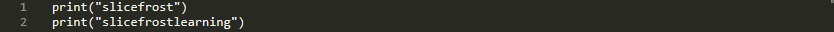
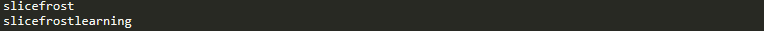
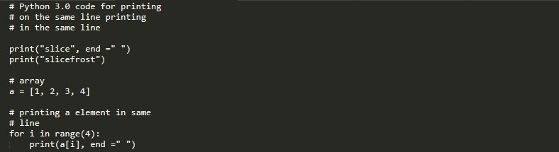
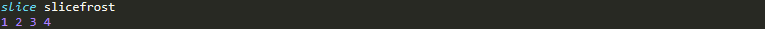

How to print without newline in Python?
Print without newline in Python. Generally people switching from C/C++ to Python wonder how to print two or more variables or statements without going into a new line in python. Since the python print() function by default ends with newline. Python has a predefined format if you use print(a_variable) then it will go to next line automatically. For examples:

This will result in the output to be:
But sometime it may happen that we don’t want to go to next line but want to print on the same line. So what we can do? The solution here is for Python 3.0 and above versions.
 Output for the corret demonstrated version will be: 